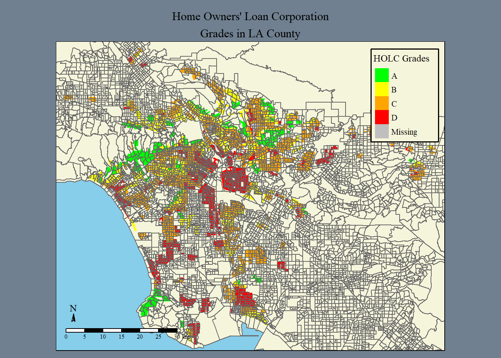
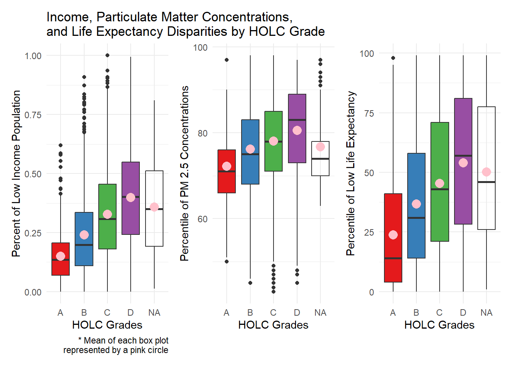
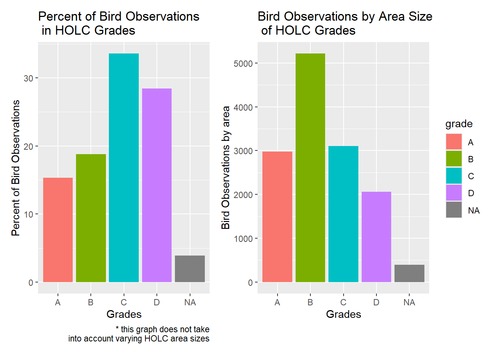

Code
# Load libraries
library(tidyverse)
library(sf)
library(stars)
library(tmap)
library(here)
library(kableExtra)
library(patchwork)
library(testthat)January 10, 2025
Redlining began during the Great Depression, when FDR introduced the New Deal, a program designed to help Americans suffering financially. Although many of the reforms in the New Deal were successful, others were extremely discriminatory. During this time, the Home Owners Loan Corporation (HOLC) was created. This agency was designed to help with the housing crisis and prevent foreclosures through refinancing. This involved lenders and real estate agents grading the investment risks of neighborhoods. Unfortunately, these grades were heavily based on racial and socioeconomic makeup.
Grades included:
Lower grades were given to neighborhoods that were majority black, minorities, immigrants, or poor whites. This prevented people of color from moving to majority white neighborhoods and greatly financially impacted homeowners of color. (https://clkrep.lacity.org/onlinedocs/2019/19-0600_misc_5-6-19.pdf)
Although redlining was outlawed in the 1968 Fair Housing Act, many effects of redlining have continued to present day. In this project, I mapped and explored the graded makeup of LA as well as biodiversity in previously redlined districts in present day.
# Read in data
ejscreen <- sf::st_read(here::here("posts", "EJ_LA", "data", "ejscreen","EJSCREEN_2023_BG_StatePct_with_AS_CNMI_GU_VI.gdb"))
birds <- sf::st_read(here::here("posts", "EJ_LA","data", "gbif-birds-LA", "gbif-birds-LA.shp"))
holc <- sf::st_read(here::here("posts", "EJ_LA","data", "mapping-inequality", "mapping-inequality-los-angeles.json")) %>%
filter(st_is_valid(.))In order to effectively explore the effects of redlining, we need to zoom in on a specific area. Much of our data covers the entire US, so we need to narrow it down to just LA.
# Filter down data to look only at LA County
California <- ejscreen |>
dplyr::filter(ST_ABBREV == "CA" & ID != "060379903000" & ID != "060379902000")
LA <- California |>
dplyr::filter(CNTY_NAME == "Los Angeles County")
# Check if the coordinate system is the same
print(st_crs(LA) == st_crs(holc))[1] FALSE# Transform data to same coordinate system
holc_transform <- st_transform(holc, crs = st_crs(LA))
# Check that it works
if(st_crs(holc_transform) == st_crs(LA)){
print("it's a match!")
} else {
stop("not a match, check your coordinate systems!")
}[1] "it's a match!"# Make data set for counties surrounding LA for map
surrounding_Counties <- California |>
dplyr::filter(CNTY_NAME == "San Bernardino County" | CNTY_NAME == "Orange County" )
# Transform data to same coordinate system
surrounding_transform <- st_transform(surrounding_Counties, crs = st_crs(LA))
# Check our transformation
if(st_crs(surrounding_transform) == st_crs(LA)){
print("it's a match!")
} else {
stop("not a match, check your coordinate systems!")
}[1] "it's a match!"# Transform California data to same coordinate system
California_transform <- st_transform(California, crs = st_crs(LA))
# Check our transformation
if(st_crs(California_transform) == st_crs(LA)){
print("it's a match!")
} else {
stop("not a match, check your coordinate systems!")
}[1] "it's a match!"# Map HOLC grades
HOLC_map <- tm_shape(California_transform, bbox = holc_transform) +
tm_polygons(col = "beige") +
tm_shape(holc_transform) +
tm_fill("grade",
palette = c("A" = "green",
"B" = "yellow",
"C" = "orange",
"D" = "red"),
title = "HOLC Grades") +
tm_shape(LA, bbox = holc_transform) +
tm_borders() +
tm_shape(surrounding_Counties) +
tm_borders(alpha = .2) +
tm_layout(main.title = "Home Owners' Loan Corporation\nGrades in LA County",
legend.position = c("right", "top"),
legend.title.size = .8,
legend.height = -.3,
main.title.position = "center",
main.title.size = 1,
bg.color = "skyblue",
outer.bg.color = "slategrey",
legend.frame = TRUE,
legend.frame.lwd = 1.5,
legend.bg.color = "beige",
fontfamily = "serif") +
tm_compass(position = c("left", "bottom"), size = .7, type = 'arrow') +
tm_scale_bar(position = c("left", "bottom"))
# View map
HOLC_map
# Join data to summarize census block groups within each HOLC grade
census_percent <- st_join(holc_transform, LA, join = st_intersects) |>
group_by(grade) |>
summarize(pct_block_groups_in_LA = n()/nrow(LA)*100) |>
st_drop_geometry() |>
rename(Grade = grade, "Pct of Block Groups in LA" = pct_block_groups_in_LA)# view table
kbl(census_percent, caption = "Percent of Current Census Block Groups Within Each HOLC Grade") |>
kable_classic(full_width = FALSE, html_font = "Cambria")| Grade | Pct of Block Groups in LA |
|---|---|
| A | 6.814388 |
| B | 18.303233 |
| C | 41.705873 |
| D | 19.729853 |
| NA | 4.492336 |
for context: the percentages do not add up to 100 percent because we chose not to deal with overlapping census blocks and HOLC grades. With the information and skill set provided at the moment, the percentage error is cautiously overlooked
Mapping HOLC grades in LA greatly helps to visualize the redlining present in the early to mid 1900s. In order to look at one of the many lasting effects of redlining, let’s first look at the connection between the percent of low income population, particulate matter concentrations, and low life expectancy percentiles in each grade.
# Join data sets and drop geometry to get summary stats
sum_stats <- st_join(holc_transform, LA, join = st_intersects) |>
st_drop_geometry()
# Plot box plots with means for low income, PM 2.5, and life exp.
low_inc <- ggplot(sum_stats, aes(grade,LOWINCPCT, fill = grade))+
geom_boxplot(show.legend = FALSE) +
stat_summary(fun =mean, geom ="point", shape=20, size=6, color="pink", fill="pink") +
theme(legend.position="none") +
scale_fill_brewer(palette="Set1") +
labs(x = "HOLC Grades",
y = "Percent of Low Income Population",
caption = " * Mean of each box plot\n represented by a pink circle",
title = "Income, Particulate Matter Concentrations,\nand Life Expectancy Disparities by HOLC Grade") +
theme_minimal()
PM_p <- ggplot(sum_stats, aes(grade,P_PM25, fill = grade))+
geom_boxplot(show.legend = FALSE) +
stat_summary(fun =mean, geom ="point", shape=20, size=6, color="pink", fill="pink") +
theme(legend.position="none") +
scale_fill_brewer(palette="Set1") +
labs(x = "HOLC Grades",
y = "Percentile of PM 2.5 Concentrations") +
theme_minimal()
low_life <- ggplot(sum_stats, aes(grade,P_LIFEEXPPCT, fill = grade))+
geom_boxplot(show.legend = FALSE) +
stat_summary(fun =mean, geom ="point", shape=20, size=6, color="pink", fill="pink") +
theme(legend.position="none") +
scale_fill_brewer(palette="Set1") +
labs(x = "HOLC Grades",
y = "Percentile of Low Life Expectancy") +
theme_minimal()
# View patchworked plots
print(low_inc + PM_p + low_life)
The results of the figures is not surprising, it follows a pattern in each plot. In all cases we see here, the D grade HOLC areas have the highest values, meaning that they have the highest percentage of low income, the highest percentage of low life expectancy, and the highest percentile of PM 2.5 concentrations. As the grades go up, the low income, PM concentrations, and low life expectancy goes down.
Unfortunately, it’s still clear to see how redlined districts continue to impact quality of life in low graded neighborhoods. We can also see the effects of redlining through biodiversity disparities. We will introduce data on bird observations in LA, and then examine whether there is a pattern between observations and HOLC grades.
[1] FALSE# Change coordinate system for birds to match holc_transform
birds_transform <- st_transform(birds, crs = st_crs(holc_transform))
# Check that it works
if(st_crs(birds_transform) == st_crs(LA)){
print("it's a match!")
} else {
warning("not a match, check your coordinate systems!")
}[1] "it's a match!"# Join bird data into HOLC data
bird_redline <- st_join(holc_transform, birds_2022, join = st_intersects)
# Group birds by grades
grade_bird <- bird_redline |>
st_drop_geometry() |>
group_by(grade) |>
summarize(obs_percent = n()/nrow(bird_redline)*100)
# Recalculate by area
area_holc_bird <- bird_redline |>
group_by(grade) |>
summarize(total_area = sum(area, na.rm = TRUE),
grade_count = n()) |>
mutate(bird_count_area = grade_count/total_area) |>
select(grade, bird_count_area) |>
st_drop_geometry()# Create plot
percent_plot <- ggplot(grade_bird) +
geom_col(aes(x = grade, y = obs_percent, fill = grade), show.legend = FALSE) +
labs(x = "Grades",
y = "Percent of Bird Observations",
title = "Percent of Bird Observations\n in HOLC Grades",
caption = " * this graph does not take\n into account varying HOLC area sizes")
# Create plot
area_plot <- ggplot(area_holc_bird) +
geom_col(aes(x = grade, y = bird_count_area, fill = grade), show.legend = TRUE) +
labs(x = "Grades",
y = "Bird Observations by area",
title = "Bird Observations by Area Size\n of HOLC Grades")
# View plots
print(percent_plot + area_plot)
At first glance, it looks like the percent of bird observations in HOLC graded areas are counter intuitive. It looks as if C and D have the highest percentage of bird observations, which goes completely against what we would expect. Ellis-Soto et all writes that historically redlined districts are under sampled in terms of bird diversity. Why is our data different? When looking at the map of HOLC grades, the answer is clear, there is significantly more areas with A and B grades. This means that although there are more bird observations in A and B areas, their percentages are lower because they cover more area. To look at how the bird observations actually change by grade, we recalculated the bird data to account for the size of the HOLC graded areas. When looking at the second figure, it lines up with Ellis-Soto et al. Although the pattern is not perfect, the D grade does have the lowest observations by far.
This project only begins to touch on the environmental and socioeconomic lasting impacts of redlining in LA and over the entirety of the US. This project was led by Dr. Ruth Oliver in a graduate level Geospatial Analysis class at the Bren School for Environmental Science and Management at UCSB.
| Data | Citation | Link |
|---|---|---|
| EJ Screen Data | EPA. EJScreen Tool. | https://www.epa.gov/ejscreen/download-ejscreen-data |
| HOLC Redlining Data | Digital Scholarship Lab. Mapping Inequality Project | https://dsl.richmond.edu/panorama/redlining/data |
| Biodiversity Observation Data | Global Biodiversity Information Facility | https://eds-223-geospatial.github.io/assignments/gbif.org |
| Historical Redlining Paper | Ellis-Soto D, Chapman M, Locke DH. Historical redlining is associated with increasing geographical disparities in bird biodiversity sampling in the United States. Nat Hum Behav. 2023 Nov;7(11):1869-1877. doi: 10.1038/s41562-023-01688-5. Epub 2023 Sep 7. PMID: 37679441. | https://pubmed.ncbi.nlm.nih.gov/37679441/ |